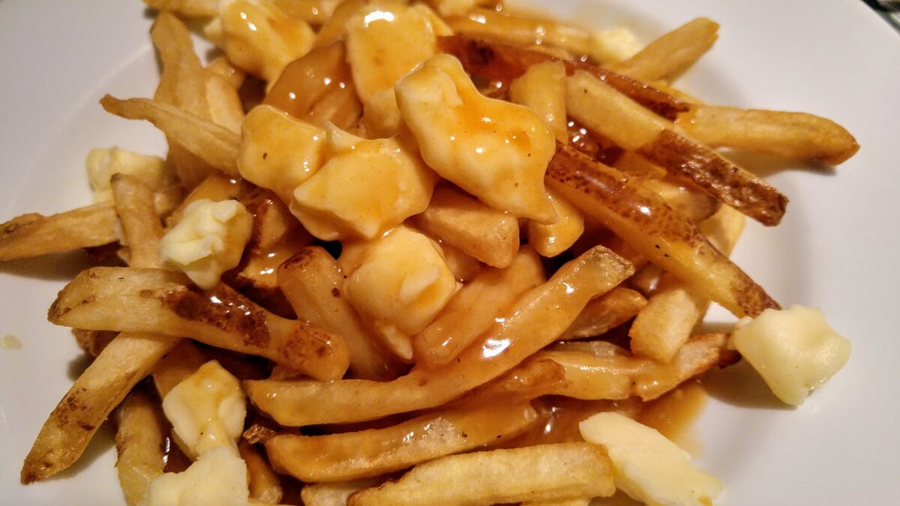
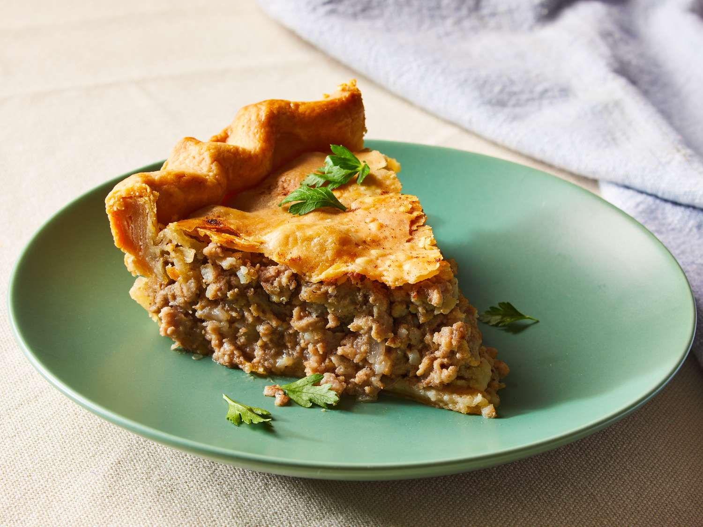
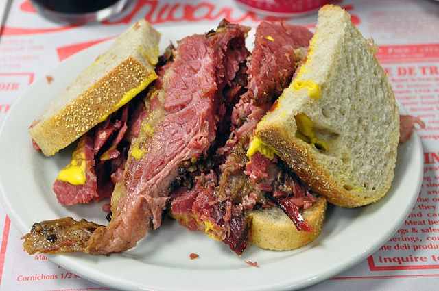

Cuisine
National Dish
The National Dish of Canada is Poutine. It consists of french fries with cheese curds and gravy.
Hover to see
Foods
Tourtière
Hover to see
Tourtière is a French Canadian meat pie dish originating from the province of Quebec, usually made with minced pork, veal or beef and potatoes.
Montreal smoked meat
Hover to see
Montreal-style smoked meat, Montreal smoked meat or simply smoked meat in Quebec is a type of kosher-style deli meat product made by salting and curing beef brisket with spices.
Butter Tarts
Hover to see
A butter tart is a type of small pastry tart highly regarded in Canadian cuisine. The sweet tart consists of a filling of butter, sugar, syrup, and egg, baked in a pastry shell until the filling is semi-solid with a crunchy top.